A single platform, transparent audits
With more than 3,500 audits, Opéra 2 lets clients follow every step of their audits while simplifying exchanges with auditors within the platform.
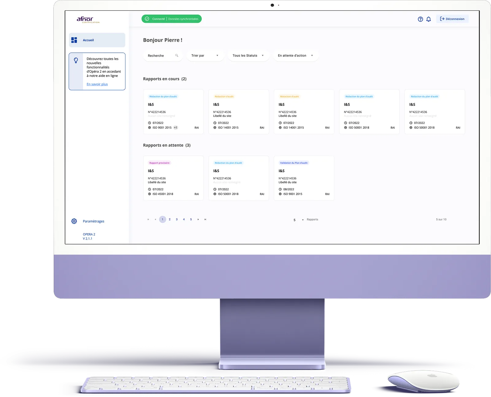
The mission
Launched by Afnor in 2016, OPERA is a SaaS audit-tracking platform. Designed for clients wishing to be audited, it streamlines the process from preparation to decision-making, while allowing clients to collaborate with their auditor and account manager on a shared platform. Initially focused on a graphic redesign and therefore UI design, I supported my clients through a much deeper UX overhaul of the platform.
UX audit & complete ergonomic redesign
Simplify tracking processes and data entry
Create a design system
Reconnect with users
My role
As Product Designer, I supported Afnor through the complete ergonomic redesign of the solution, including a user-experience improvement phase all the way to the design of a comprehensive design system. For this project I had the opportunity to work with Afnor's internal team in charge of the Opéra project: Marie Sperandio, Head of Digital Transformation, Ilija Spaargaren, Project Manager, Frédéric Dorinet, Product Owner, and Williams Bouton, CSM. On the development side, the Anakeen agency was represented by Moez Marrakchi, Development Engineer, Lydie Derrien, Projects Director, and Santiago Mauro, Fullstack Developer.
Main tasks
- Interview and Scope
- Research and ideation
- Design execution and validation
- Design system creation, integration and handover
Design & Research Toolkit
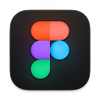
FigmaEye TrackingPlanning
The project unfolded in 4 main phases: audit, shadowing & eye tracking, information architecture & wireframing, interface finalization & prototype.
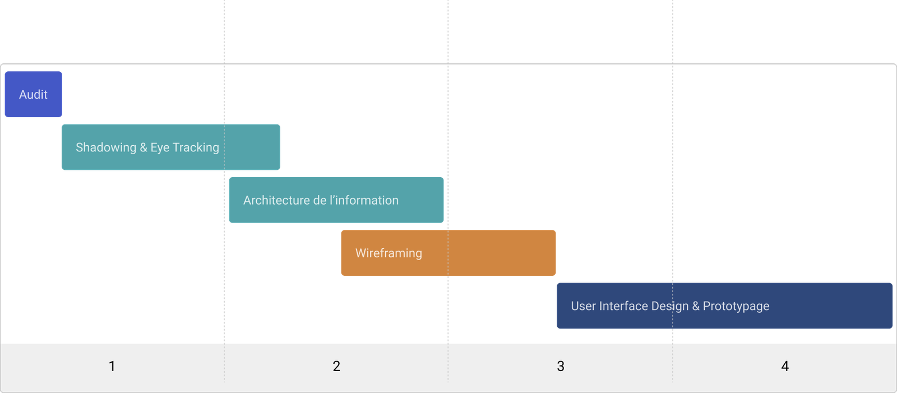
Research deck
Shadowing
Shadowing is one of the observation methods I set up at the start of the research phase. It allowed me to observe the behavior and interactions of a panel of users with the existing product.
During the workshop we individually involved 10 users and asked them to carry out their usual tasks on the Opéra 2 platform. We positioned ourselves behind them, taking care not to disturb their environment, in order to observe them using the service. Duration: 40-50 minutes. Finally, we wrapped up the workshop with an ergonomic evaluation grid.
Eye Tracking
Eye tracking is a technology that measures eye movements. This technique lets us understand in detail users' visual journey across an interface, in order to better understand what catches their attention the most. Eye tracking is currently considered a highly accurate UX research method. Setup: Tobii Pro Nano solution.
During the workshop we individually involved 8 users and asked them to carry out their usual tasks on the Opéra 2 platform. The camera tracked, recorded and analyzed users' eye movements while they used the service.
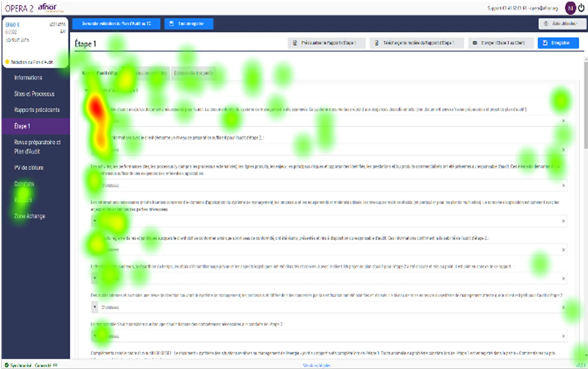
The solution
The redesign
The ergonomic redesign brought harmonization and standardization of the following behaviors: the creation of systems and patterns depending on the page typology — forms, tables, dashboards, etc.; improved input assistance; simplification of tasks thanks to to-do goals (notifications); a navigation overhaul to make it more readable, clear and fluid, combining the sidebar and the tab bar; improved overall readability with tooltips where needed; reduced interface complexity to lighten users' mental load; improved overall performance, notably by reducing response times; and clearer, more understandable wording for the user.
User interface — Dashboard
The new dashboard lets users see at a glance the reports awaiting their action, the reports awaiting an auditor action, and the archived reports.
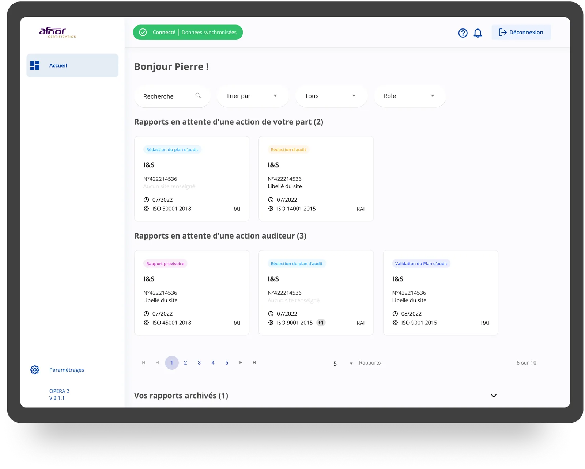
Audit list & progress
The navigation combining a sidebar and a tab bar makes it possible to follow each step of the audit: preparatory review and audit plan, findings, report, comments, final report and exchange area.
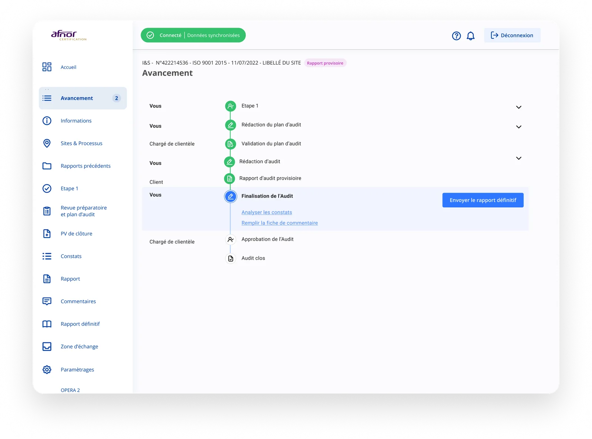
Finding detail
Each finding (minor NC, out of scope, etc.) has a detailed sheet gathering the sites involved, the answers and the proposed actions.
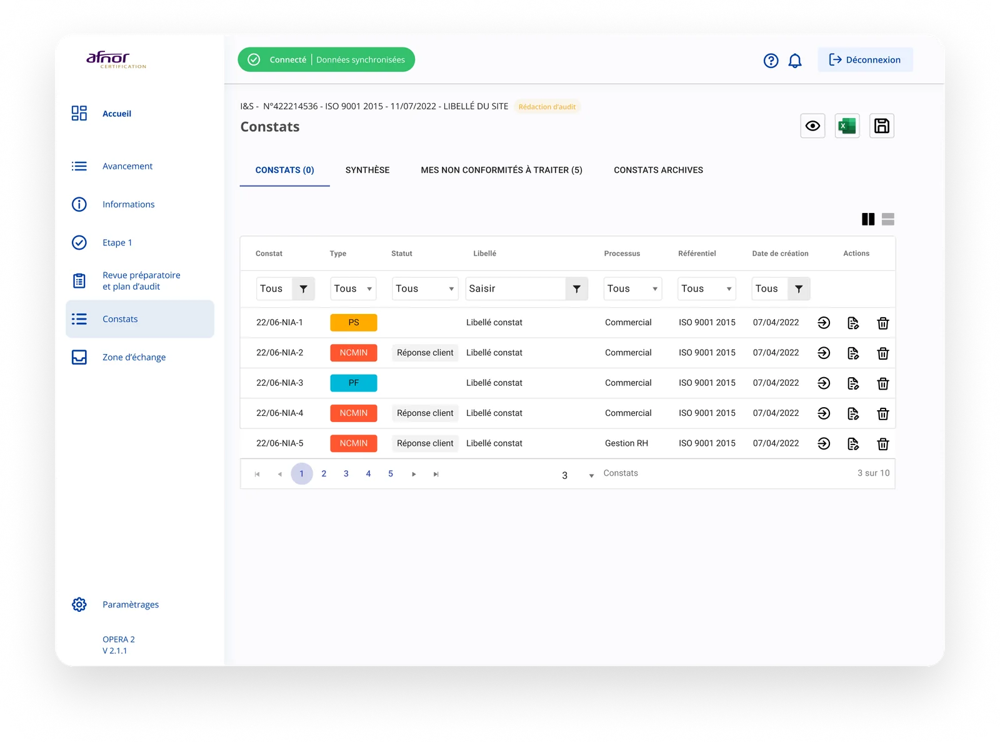
Final report
The validation workflow makes it possible to request corrections or validate the audit report, submit it to the RA and send the final report.
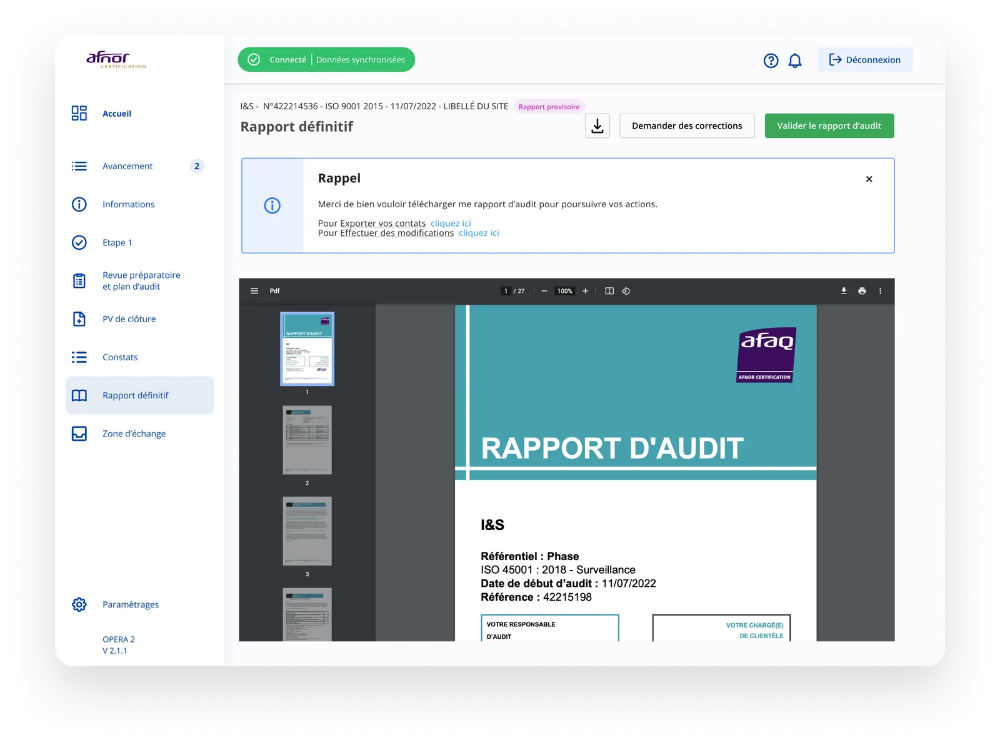
Prototype
Find the prototype on Figma. For confidentiality reasons the prototype is not accessible at the moment.
The impact
The ergonomic redesign achieved:
Acknowledgements
Thanks to the whole Afnor team
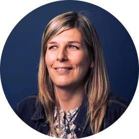
Marie Sperandio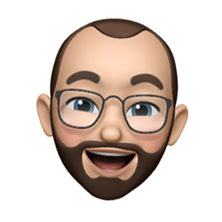
Frédéric DorinetThanks also to the Anakeen teams
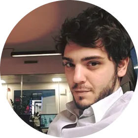
Santiago Mauro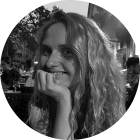
Lydie Derrien